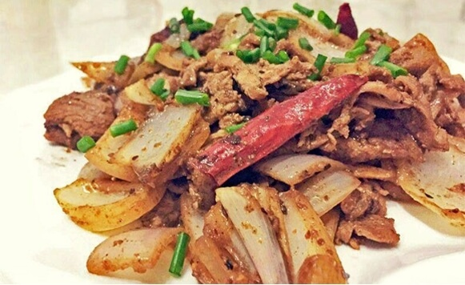

羊肉速冻后，手工精切，肉品肥瘦相间，肉质厚实紧致，口感鲜嫩无膻味，爆炒、烧烤两相宜。
Step1：羊肉片在水里浸泡若干小时后捞出沥干水分，倒入料酒、生抽、孜然粉、油和淀粉，用手抓匀并适当揉搓按摩，腌制20分钟；
Step2：锅中无水无油，放入一勺孜然粒小火焙香，有香味飘出后盛出备用；
Step3：锅中放适量油，油热后放入切好的洋葱块大火翻炒，撒盐后炒至稍变软后出锅备用；
Step4：热锅冷油，放入葱、蒜、干辣椒和之前焙香的孜然粒，中火煸炒，煸出香味后放入腌制好的羊肉片，大火翻炒，加入两大勺孜然粉、两大勺花椒粉、两大勺辣椒粉、一勺盐，翻炒均匀，出锅装盘，撒上葱花点缀。